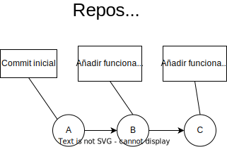
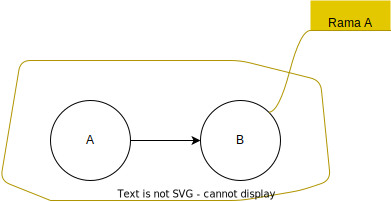
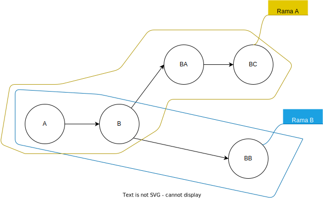

Git es un sistema de control de versiones. Nos permite mantener un historial completo del código fuente de un proyecto.
Commit
Documentación oficial (línea de comandos)
Un commit es una copia completa de los archivos que queda registrada en el repositorio. Además contiene un mensaje corto Que describe los cambios realizados.
En esta imagen se puede ver el repositorio, en el que Los commits son los Círculos A, B y C. En los rectángulos se puede ver el mensaje asociado a cada commit.
En este caso se muestra el repositorio de un proyecto de página web, donde hace falta un registro y un login para la gestión de usuarios.
Rama (branch)
Documentación oficial (línea de comandos)
Una rama es un posible punto de anclaje para poder añadir un nuevo commit. Es posible crear 2 (o más) ramas a partir de un mismo commit, es decir, permite ramificar el historial de commits.
Supongamos que tenemos un repositorio sencillo, con 2 commits (A y B). En este repositorio sólo existe una única rama, la Rama A.
Una posible razón para crear una rama es la siguiente:
Supongamos que vamos a trabajar en una funcionalidad nueva,
pero mientras trabajamos en ella va a hacer que el proyecto deje de funcionar.
En ese caso podemos crear una Rama B para guardar el progreso de la nueva funcionalidad.
De este modo, las personas que no trabajen sobre esa funcionalidad, pueden seguir mejorando el resto del proyecto
mediante la Rama A, sin que nuestros cambios le afecten.
De momento el historial quedaría así:

Se ha creado una nueva rama. Por el momento ambas ramas son exáctamente iguales, ya que su commit más reciente es el B.
Si añadimos los cambios que molestan (commit BB) a la Rama B, el historial quedaría de la siguiente manera:

Como podemos ver, la Rama A se ha quedado "atrás", es decir, nuestros cambios en BB no molestarán a quien trabaje sobre la Rama A.
El historial quedaría así si alguien añadiese los commits BA y BC a la rama Rama A.
